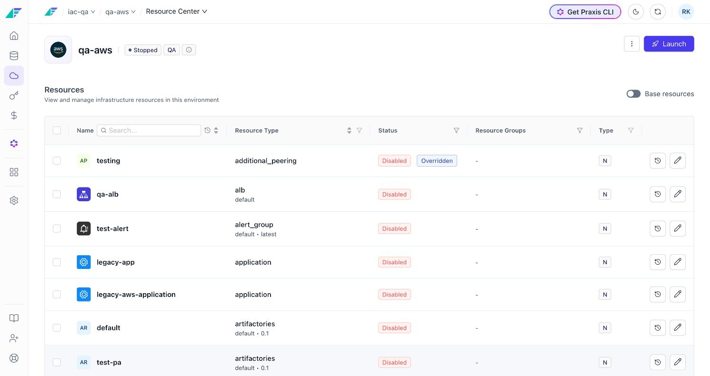
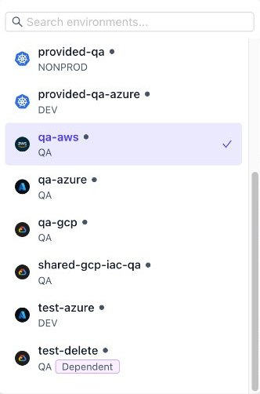
Part of Facets' move to React
Facets is a tool companies use to set up and change the cloud servers and databases their apps run on.
With Facets, developers make these changes themselves, like giving an app more memory, instead of raising a ticket with the DevOps team and waiting. The DevOps team sets Facets up, and developers use its web app every day.
Facets was rebuilding its web app in React, while two older versions still ran side by side.Customers had pushed back on an earlier redesign. If this one failed too, Facets would be running three versions.
The navigation didn't match how people work.Developers work inside projects, but every screen showed them the organisation's setup tools and crammed their own pages into a row at the top. The most common daily task took 14 clicks.
I designed the navigation around the two kinds of users first, then rebuilt every screen on it.A side menu for each level, a breadcrumb that switches environment in one click, and one header that shows status and actions. The team had tried breadcrumbs before, so I proved it first: a working build, tests with users, and a two-phase rollout.
57% fewer clicks on the most common daily task, and satisfaction up from 5.8 to 8.4.Every customer moved to the new web app, and both older versions were switched off.
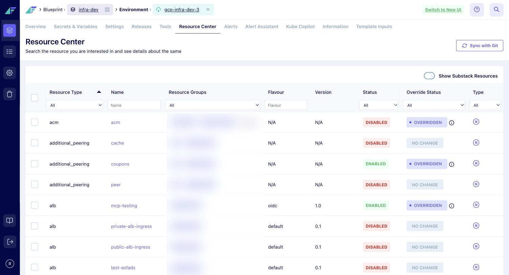
1 2 3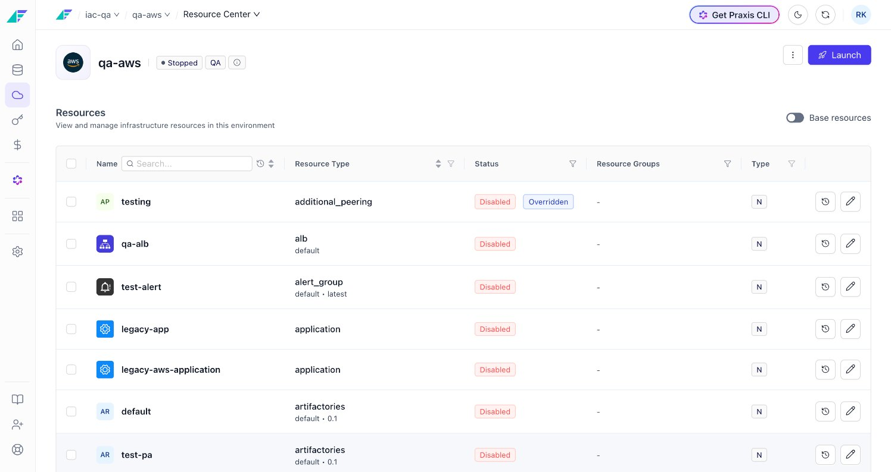
1 2 3Customers had pushed back on an earlier redesign, so both versions stayed up. The React rebuild would add a third, and if customers didn't take to it, Facets would be supporting all three.
Less confusion and less friction for the engineers who use the web app every day.
Every screen was being rebuilt in React anyway, so this was the moment to fix the experience instead of carrying the old problems into new code.The modules, cloud accounts and settings every project uses, and the blueprint that defines each project's resources.
Release changes, check what's running and read logs.
When something breaks, DevOps steps in here to fix itAn example project.
Most of the daily work happens inside a project's environments.
Mixpanel usage data, customer interviews and a map of their most frequent tasks all showed this.Dev and production run the same resources, so their screens look almost the same. If you think you're in dev but you're in production, your change goes to production.
To move around with confidence, an engineer needs four things
Which project and environment this screen belongs to
Developers spend most of their day in an environment, so its releases, resources and secrets belong together there
The same page in another environment, without starting over
Frequent actions without going through menus every time
Click through both versions. Each screen marks what went wrong, and which of the four needs it fails.
Developers spend their day inside projects, but the side menu only held the organisation's setup tools, the same four on every screen. Everything they needed was squeezed into a row at the top.
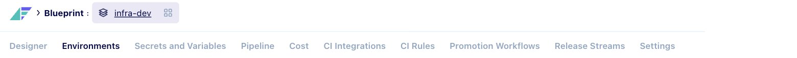
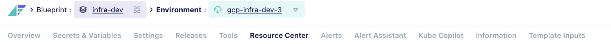
Only one extra breadcrumb segment marked the change, and the side menu showed the same four items everywhere, so it was easy to lose track of the level you were on.
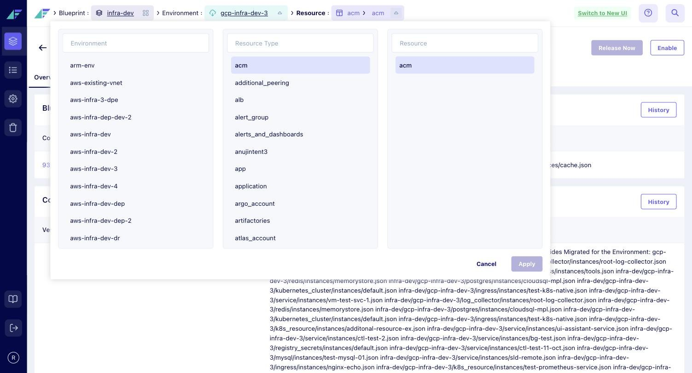
Up to three lists to change one environment Apply, greyed until a check came backMost customers run about five environments, and picking one still meant a panel, up to three lists and an Apply button.
It got one thing right: most work happens inside an environment. But to make that work quicker to reach, it moved Releases, Resource Center and Secrets & Variables up to the project, and split each environment in two.
Its Release button sent you back out to the project
Each one asked you to pick the environment again, then Apply
A developer works in one environment at a time, but its work now lived in two places, with no link between them. Checking releases in two environments took 7 clicks, two more than in the original UI.
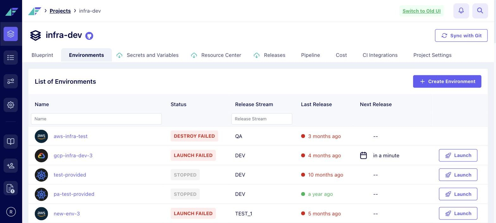
Secrets, resources and releases became project tabs, each asking for an environment The project opened on a list of environments Still the organisation's tools, inside the projectTo check one environment's releases, you left the environment, opened the project's Releases tab and picked the environment again.
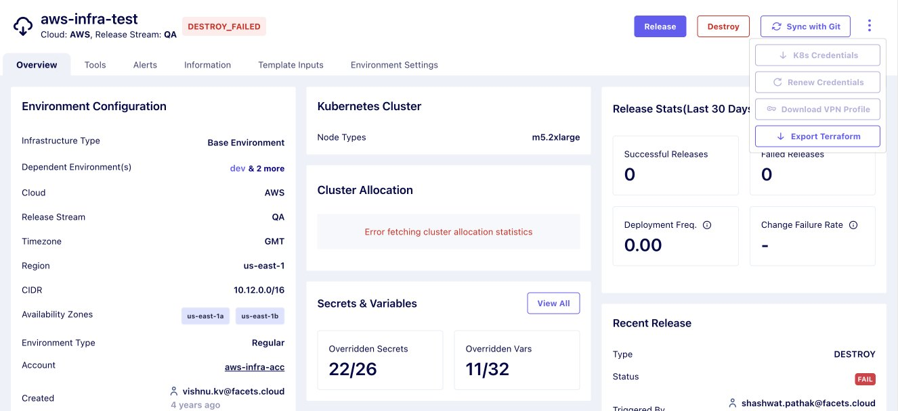
No tab for releases, resources or secrets The overview led with the settings it was created withIts Release button sent you back out to the project's Releases tab.
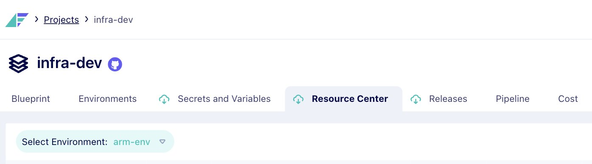
The breadcrumb names the project The page is set to one environment, arm-env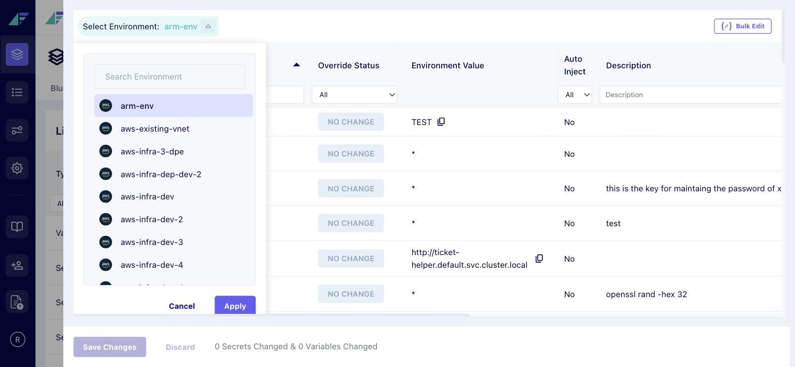
A second switcher, inside the page With its own Cancel and ApplyThe original panel stayed too, and one page had its own modal: three different ways to switch environment.
People doubled back between pages on common tasks.
On UX issues: confusion, lack of clarity and the number of clicks.
Get to my work in a few clicks, and always know which environment I'm in.
The side menu showed the organisation's tools on every screen, so it never told you where you were. The project's pages were crammed into one row. The earlier redesign split each environment's work across the project.
The most common daily task took 14 clicks, and some customers kept using both versions.
I separated what's true about how people work from what the older versions assumed about them, and turned each wrong assumption into a question.
How might the navigation show where you are, on every screen?From: the organisation's tools on every screen, even inside projects
How might each environment keep all its work in one place?From: its releases, resources and secrets moved up to the project
How might switching environment take one click and keep your page?From: switchers that needed Apply
How might common actions sit one click from the project?From: advanced users hunting for routine actions
How might every screen work the same way?From: three different side panels and two icon sets
A smaller fix would have been cheaper. But the confusion came from the navigation itself, and every other screen is built on it.
The same problems, in new code.
The earlier redesign moved pages around, and customers pushed back.
Every page's links and redirects would change. It was the biggest change in the redesign, and the only option that fixed the cause.
I mapped the whole web app first: every level, every page, and what each page has to show. Two principles came out of it:
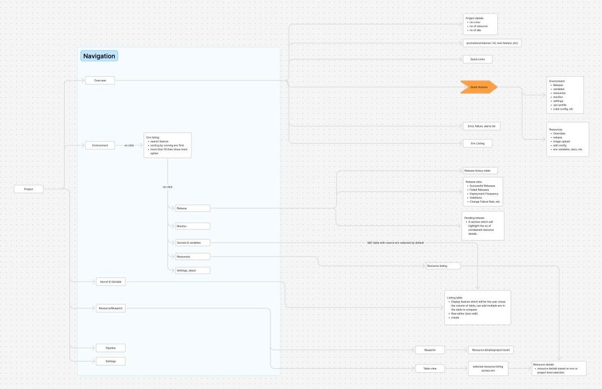
The map in FigJam.
Then I tried three ways to lay it out
The organisation and the project each get their own side menu. Each environment gets its own pages, reached from the project and switched from inside it. This shipped first, and every other screen was built on it.
Flip the switch between project and environment, and the same menu changes underneath. Dropped because Pipeline and Cost exist only for a project, so the menu would change every time you switched. That's the problem the original UI had, where the top row changed in place.
Switch set to Project
Switch set to Environment: the same menu changes underneath you
Dropped because the environment becomes a filter on the project's pages, as in the earlier redesign, instead of having its own pages.
The original UI already had a breadcrumb that switched environments, and it hadn't worked. So when I proposed this, the answer was: we already tried this.
The old breadcrumb and the new navigation, side by side
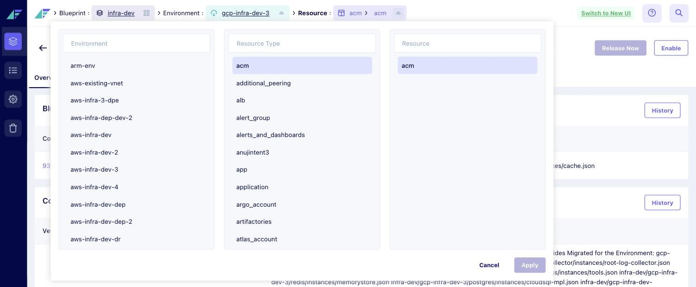
1 2 3 4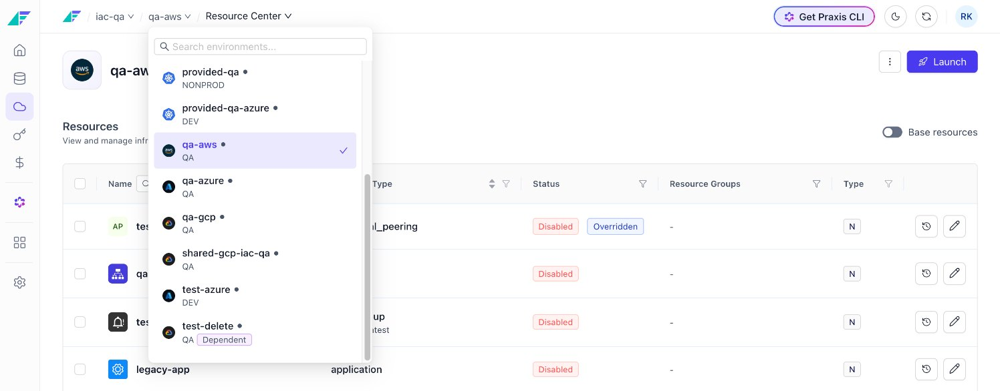
1 3 4| The original UI | The new navigation | |
|---|---|---|
| 1Changing environment | A panel with up to three lists, then Apply | One click on the breadcrumb |
| 2Waiting | Apply stayed grey until a check came back | None |
| 3Moving to another page | Not possible from the breadcrumb | The page name is a menu of that environment's pages |
| 4What you switch | Environment, resource type and resource, all in one panel | Each level from its own menu |
How I proved it
Clicks for the most common tasks in both older versions and in my proposal, and what made each step confusing. The most common daily task: 14 clicks before, 6 after.
The whole new navigation, in code with Claude Code, running locally, so people could use it instead of imagining it.
Our own team and a few customers tried it. I wrote down all their feedback.
I took the click counts and the feedback to the stakeholders, and they agreed to go ahead.
Some doubt remained, so phase one shipped only the organisation's pages with the new side menu. The feedback was good, and phase two shipped the whole web app on the new navigation.
Facets has four levels, dozens of pages and up to twelve actions on one environment. Each part of the navigation answers one question, in the same place on every screen.
The organisation's menu outside a project, the project's menu inside one.
Project, environment and page. Each step is a menu, so you can switch environment or page in one click.
The environment or resource you're on, its state, and the action you need now.
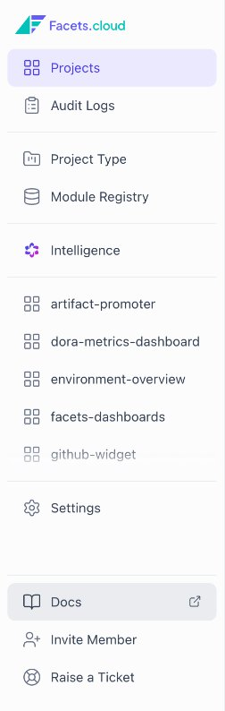
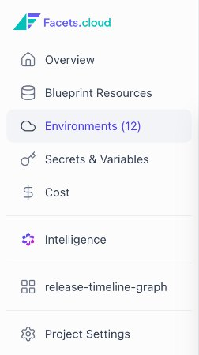
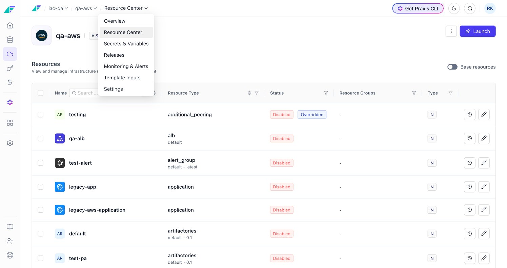
Every page of this environment, one click awayBefore: Resource Center was a project tab. You picked the environment inside the page, and the breadcrumb never said which one you were in.
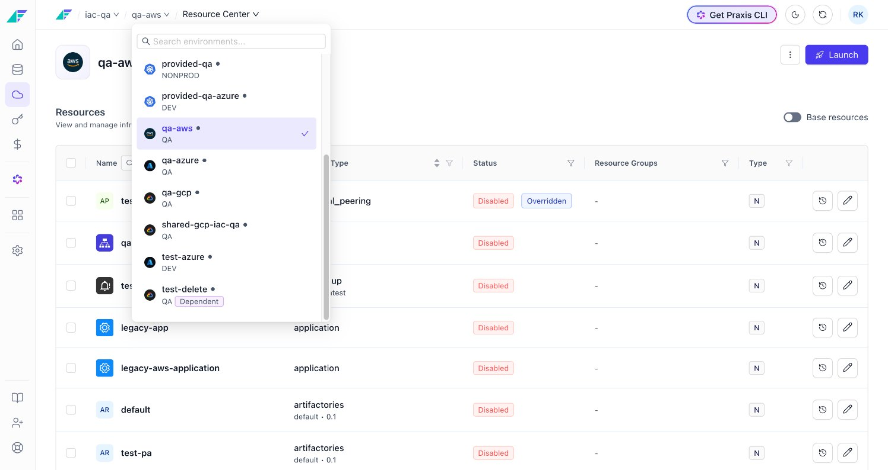
Pick another environment. You stay on Resource Center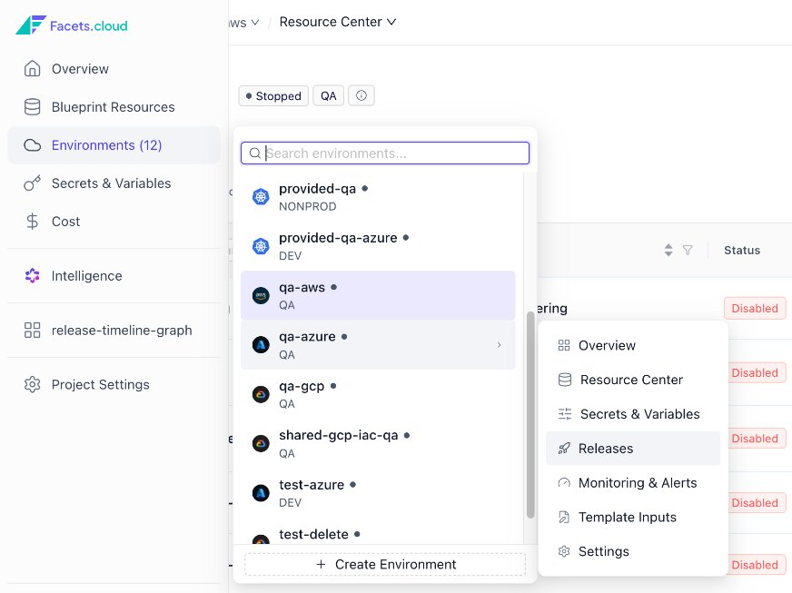
Any page of any environment, from the side menuBefore: a panel with up to three lists and Apply. The earlier redesign added a second switcher with its own Apply.
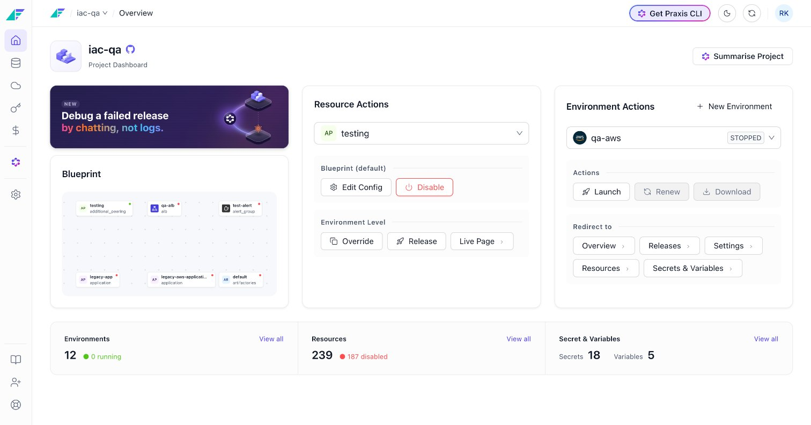
1 2Before: the project opened on a list of environments.
The hardest component in the web app. One design had to handle:
Projects, environments and resources
Running, stopped, launching, failed
On a single environment
Before: each page had only some of the actions
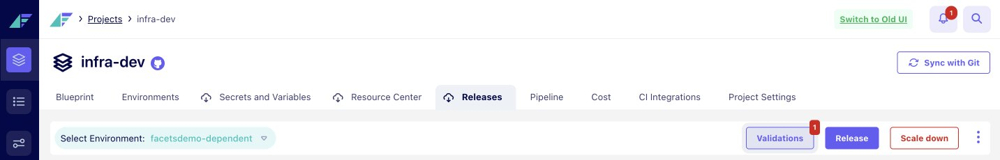
Only release actions here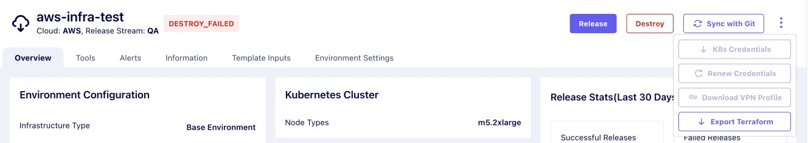
Everything else: only in this panelOn Releases you got release actions. For anything else, like credentials or the VPN profile, you had to go to Environments and open the environment. People did this all the time, and it showed up in support tickets. The original UI split actions across pages the same way.
Now: every action sits in the environment's header, on every one of its pages.
The cloud for an environment, the resource type for a resource
The project, environment or resource you're on
State, stage, region, and whether it depends on another environment
The one you need now, and everything else under More
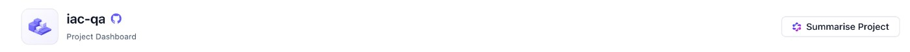
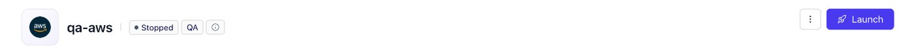
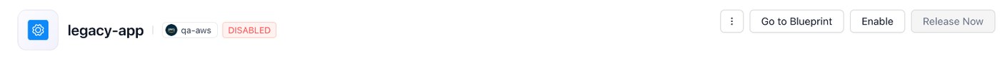
The main button follows the environment's state
| When the environment is | The header shows |
|---|---|
| Running | ReleaseScale Down |
| Stopped | Launch Release moves into More |
| Scaled down | Scale UpRelease |
| Launch failed | LaunchDestroy |
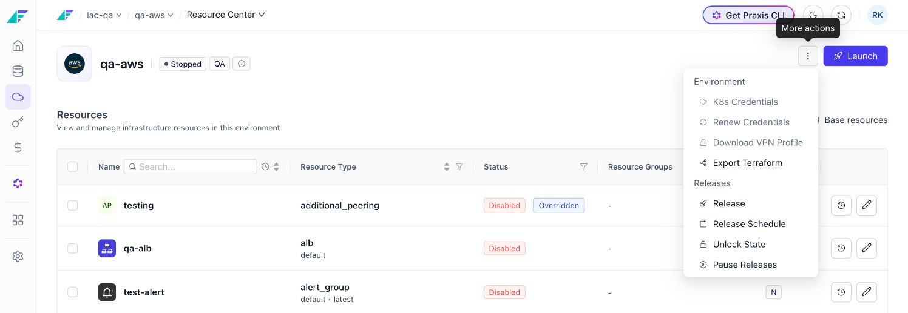
Everything else sits under More, grouped by what it acts on. Actions that can't run right now stay visible, greyed out, and say why.
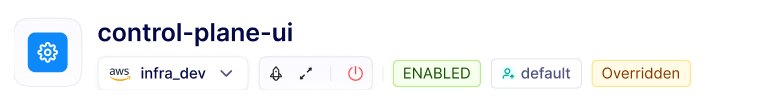
The canvas gets the whole page. Before, it sat under the project's row of nine tabs.
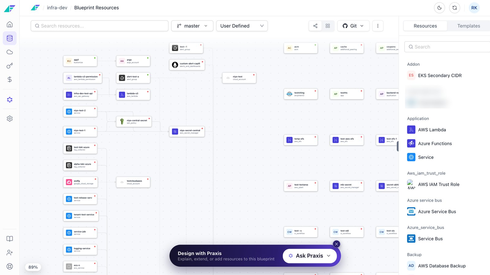
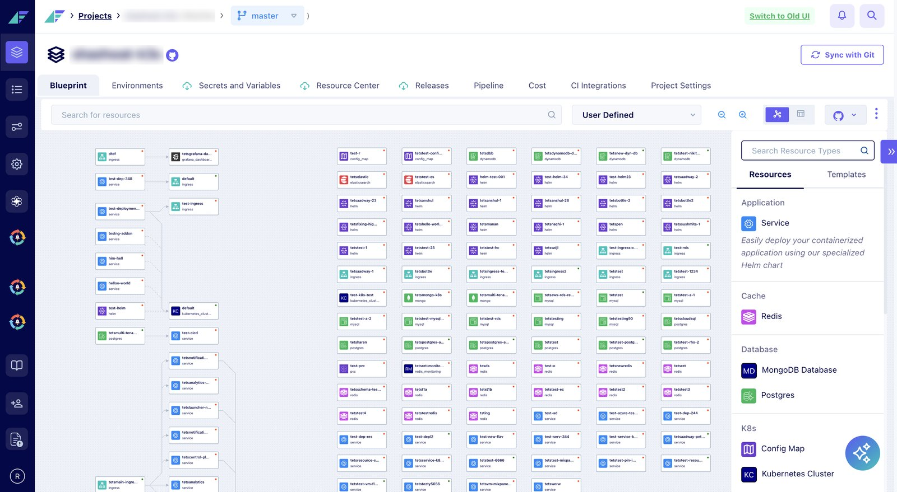
Compare environments side by side, and see which resources use each value. Before, you saw one environment at a time, picked with Apply.
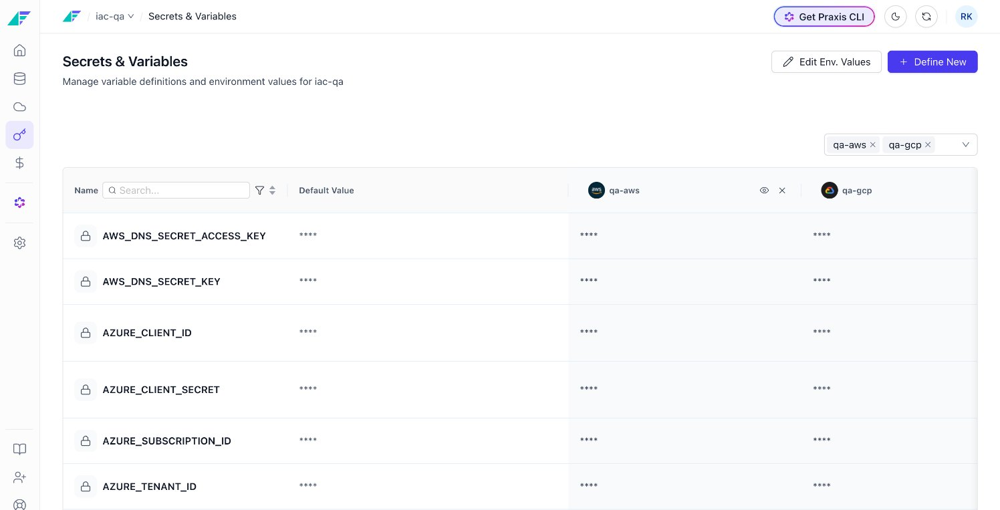
One side panel: on the left, how builds move to environments; on the right, the rules that map git branches to environments. Before, it was three large cards inside project settings.
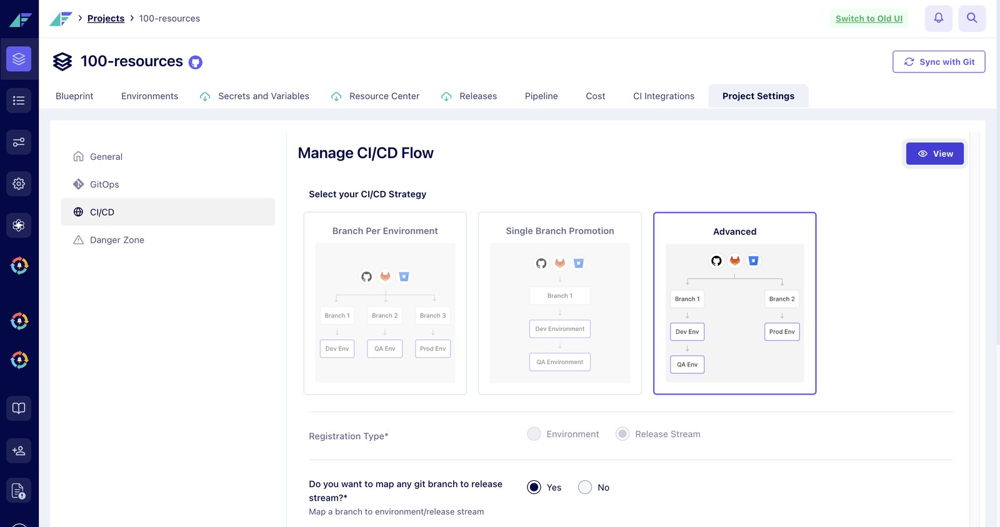
Which version of a service runs in each environment, in the order versions move from one environment to the next. From each card you can update the version, see its history or promote it to the next environment.
Choose resources in a full panel, then review what will change before anything runs. Before, it was one small dialog with the resources in a dropdown. Read the release flow case study ↗
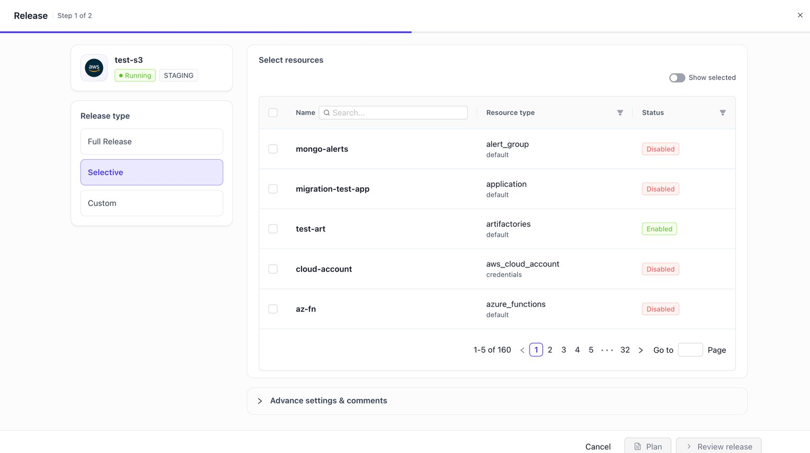
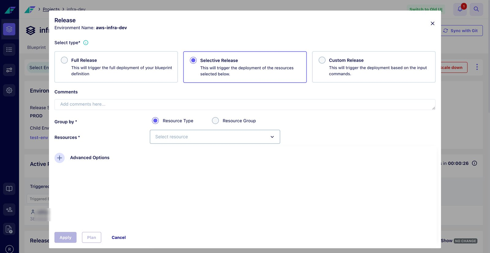
Cloud spend by environment and over time, with each resource's cost below.
Facets' own modules and the company's custom ones in one table, with each one's clouds, status and last change. Before, they were on separate tabs.
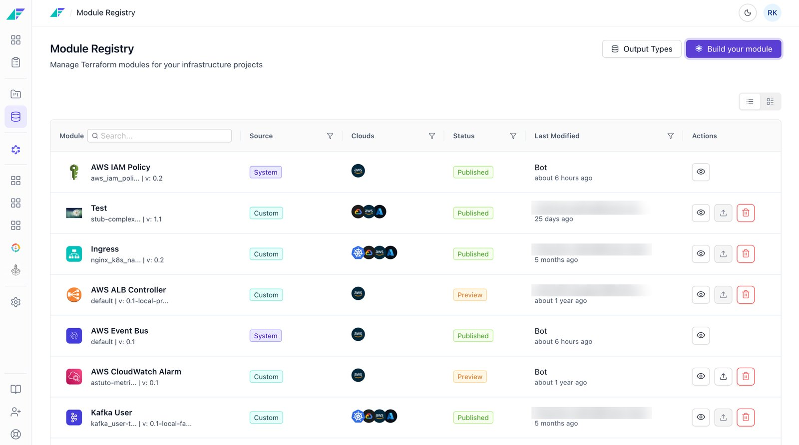
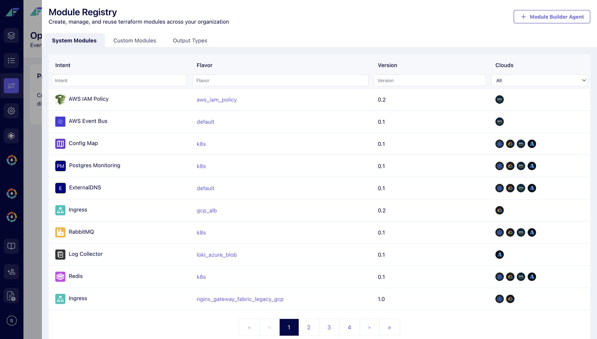
CI/CD, Release and Roles each had their own side panel. Now they share one layout and one way to save, so learning one teaches you all three.
A full set for light and dark, built from scratch. Switching plays a circular reveal from where you click.
Custom components only where it fell short, with one icon set across the web app, so the time went to the hard screens.
Every customer had to move, and engineers release no matter how good the screens are, so adoption would look the same either way. I measured what the redesign could change instead.
Counted step by step, in the old UI and the new one.
The same 14 people, interviewed before and after launch, scored out of 10.
How long each screen's main task took, and how many pages it needed. For features nobody has to use, like the Cost page and dark mode, whether people kept using them.
57% fewer clicks on the most common daily task
14 clicks in the old UI, 6 in the new one.satisfaction out of 10, from the same 14 people before and after.
within four weeks of launch.